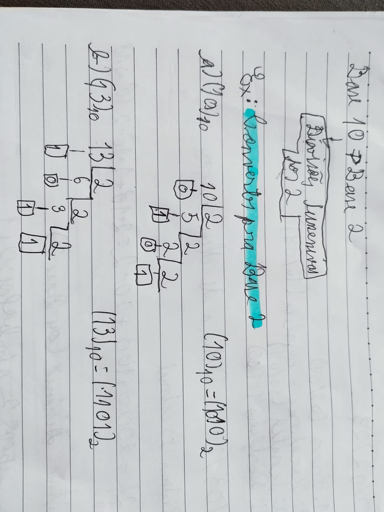

Como transformar numeros de base 10 (Decimais) para base 2 (Binários):
Para converter um número decimal para binário, usamos o método de
divisões sucessivas por 2.
Como transformar numeros de base 2 (binários) para base 10 (decimal)?
Para converter um número binário para decimal, seguimos um processo
baseado em potências de 2. Cada dígito do número binário representa
uma potência de 2, começando da direita (potência 0) para a esquerda.
As contas de adição binaria segue regras semelhantes á adição decimal:
As contas de subtração binaria segue regras semelhantes s subtração decimal:
A multiplicação binária é semelhante a multiplicação decimal, mas mais simples
porque envolve apenas 0 e 1:
A divisão binária é similar à divisão decimal:
Para converter um número decimal para octal, usamos divisões sucessivas por 8.
Para converter de octal para binário, converta cada dígito octal
para seu equivalente de três bits binários.
Para converter um número decimal para hexadecimal, usamos divisões sucessivas por 16:
Para converter um número hexadecimal para decimal, você deve usar as potências de 16.
Cada dígito do número hexadecimal é multiplicado pela potência de 16 correspondente
à sua posição, começando da direita (potência 0) para a esquerda.
Para converter um número binário para hexadecimal, agrupe o número binário em blocos de
quatro, começando pela direita. Se necessário, adicione zeros à esquerda para completar
o último grupo.
Para converter um número hexadecimal para decimal, cada dígito do número hexadecimal é
multiplicado pela potência de 16 correspondente à sua posição, começando da direita
(potência 0) para a esquerda.